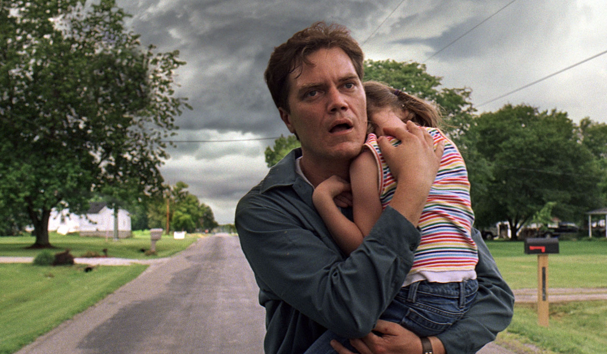

Welcome to Film A Day. Flippant film criticism. Daily.
Join the Conversation
#FilmADay #FilmInAFrame
May 01
May 02
May 03
May 04
May 05
May 06
May 07
May 08
May 09
May 10
May 11
May 12
May 13
May 14
May 15
May 16
May 17
May 18
May 19
May 20
May 21
May 22
May 23
May 24
May 25
May 26
May 27
May 28

May 29
May 30
May 31